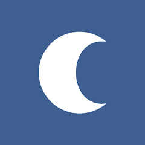
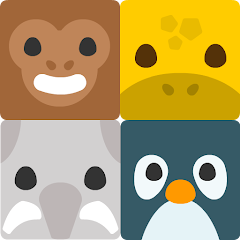
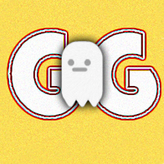

Sadelik, karmaşıklığın
nihai çözümüdür.
Nevmara, gürültüyü azaltan ve dikkati koruyan araçlar üzerine düşünür. Ekranların ötesinde bir dinginlik arayışındayız.
Somut Yansımalar

Vakitler
Günün doğal akışını takip etmek için bir araç. İbadetleri, teknolojik bir yük haline getirmeden, sessizce hatırlatır.
Gözlemle →Falling Animals
Zihinsel çeviklik ve odak üzerine bir deneme.
Oyna →

Great Ghost
Bilinmeyenin içinde sessiz bir varoluş çabası.
Oyna →

Mesele, daha azına sahip olmaktır.
Yazılımın hayatımızı kolaylaştırması gerektiğine inanıyoruz, onu ele geçirmesine değil.
Bizim için başarı; bir uygulamanın kaç saat kullanıldığı değil, kullanıcısına kaç dakika zaman kazandırdığıdır.
Gereksiz olan her şeyi eliyoruz. Geriye sadece anlam kalana dek.